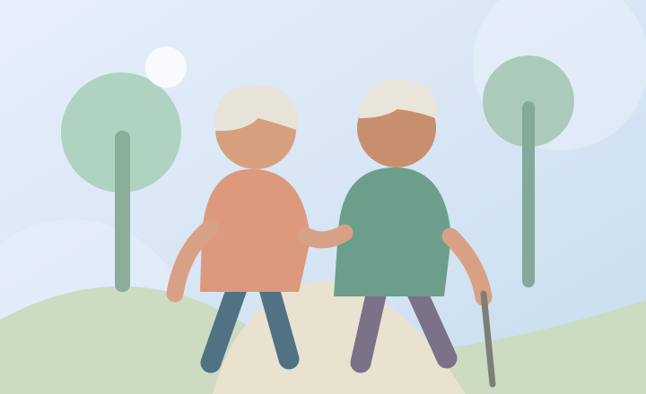

Mantente activo.
El movimiento no es una competencia. Puedes elegir actividades sencillas, disfrutar de tu ritmo y cuidar la seguridad.
Ver consejos
Cada movimiento cuenta
Moverte con regularidad puede ayudar a conservar la movilidad, la fuerza y el bienestar. Incluso un poco de actividad puede ser beneficioso.
Formas de empezar
Camina en un espacio seguro
Elige una ruta conocida, iluminada y sin obstáculos.
Mueve brazos y hombros
Puedes hacer movimientos suaves dentro de un rango cómodo.
Dedica tiempo al equilibrio
Pregunta por ejercicios apropiados y utiliza apoyo estable.
Prueba algo que disfrutes
Bailar, cuidar plantas o pasear pueden mantenerte activo.
Cuida tu seguridad
- Usa zapatos cómodos y evita suelos resbaladizos.
- Comienza poco a poco, con descansos cuando los necesites.
- Detente si aparecen mareos, dolor en el pecho o falta de aire intensa.
Consulta a tu profesional de salud antes de iniciar una actividad nueva si tienes condiciones médicas o limitaciones de movilidad.
Preguntas frecuentes
¿Y si llevo mucho tiempo sin hacer ejercicio?
Comienza con actividades muy sencillas y aumenta gradualmente según cómo te sientas y las indicaciones de tu profesional.
¿Puedo hacer ejercicio si uso bastón?
Existen actividades adaptadas. Es recomendable consultar cuáles son seguras para ti.
¿Tienes una pregunta?
Puedes escribirnos desde la página de contacto.